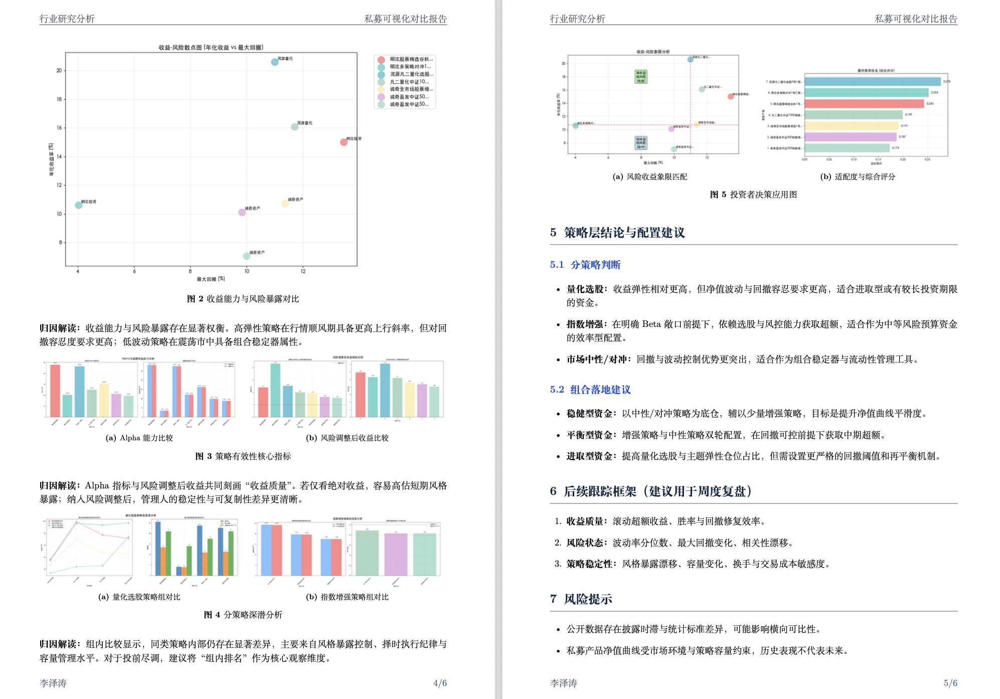
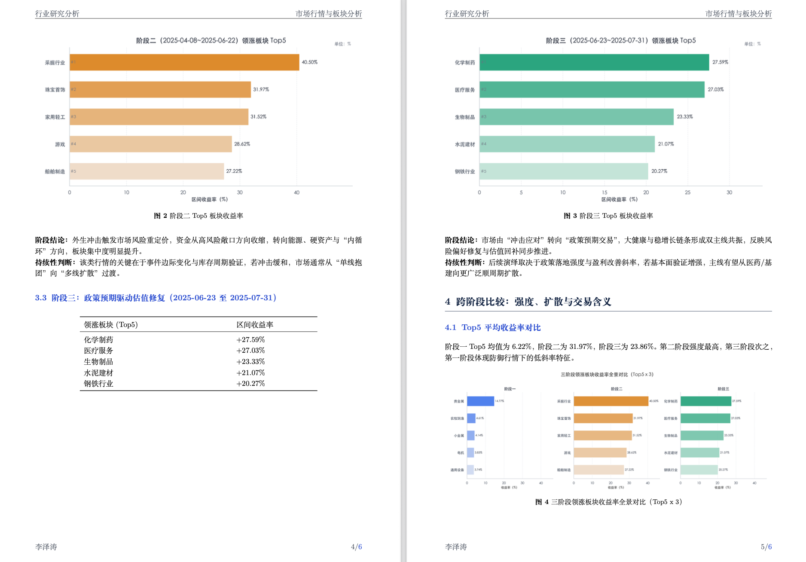

业务问题拆解
从用户、渠道、产品与运营视角拆解问题，沉淀“问题 - 证据 - 动作”分析框架。
我关注数据分析从“问题定义”到“指标口径”再到“业务动作”的完整链路。相比只展示工具标签，我更重视把模糊业务问题拆成可计算指标、可复核数据链路、可验证实验方案和可执行的复盘材料。
从用户、渠道、产品与运营视角拆解问题，沉淀“问题 - 证据 - 动作”分析框架。
搭建首单支付率、D1 留存率、渠道贡献、漏斗转化等可复核指标体系。
用 Tableau 看板、结构化 PPT 与指标口径字典，把分析结果转成团队可执行语言。

市场低吸与管理人数据
策略收益分布对比 费率与规模收益分析
费率与规模收益分析 月度收益 Top5 排行
月度收益 Top5 排行


基于即时零售公开数据集，完成从数据生成、清洗、校验、指标建模、异常诊断、原因验证、AB 实验到看板汇报的完整数据分析项目。

围绕 GenAI 向 Agentic AI 迁移，完成资料交叉验证、趋势拆解、战略建议与商业测算，输出英文报告与商赛级 PPT。

定位为数据分析与商分研究效率工具，用于展示 AI Agent、提示词调试、知识管理和 Skill 自动化能力。